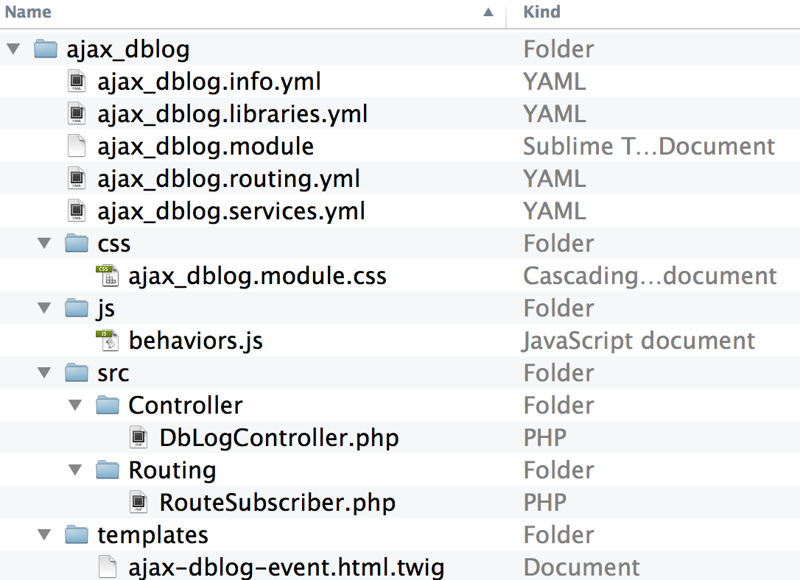

#DrupalCon
@WeAreGenuine
D8 AJAX Commands /
Michael Miles
Demystifying AJAX Callback Commands
(in Drupal 8)
Drupalcon 2016
Mike Miles
Genuine (wearegenuine.com)
All the internet places: mikemiles86
Goals of this Session
- Explain AJAX callback commands
- Outline AJAX callback commands
- Demostrate AJAX callback commands
What are AJAX Callback Commands?
If an AJAX request was a beignet...
Callback commands would be the powdered sugar.
Instructions built by the Server and
executed by the Client in an AJAX event.
Ajax API + Javascript + PHP = Callback Command
^Core^ ^Core / Modules^
Callback Command: JavaScript
- Function attached to 'Drupal.AjaxCommands.prototype'
- Accepts 3 arguments:
- ajax
- response
- status
- Wrapper for additional JavaScript
Callback Anatomy: JavaScript
(function ($, window, Drupal, drupalSettings) {
'use strict';
/**
* [commandName description]
*
* @param {Drupal.Ajax} [ajax]
* @param {object} response
* @param {number} [status]
*/
Drupal.AjaxCommands.prototype.[commandName] = function(ajax, response, status){
// Custom javascript goes here ...
}
})(jQuery, this, Drupal, drupalSettings);
[module]/js/[javascript].js[module] / js / [javascript].js
Core Example: Remove
Drupal.AjaxCommands.prototype = {
// ...
/**
* Command to remove a chunk from the page.
*
* @param {Drupal.Ajax} [ajax]
* @param {object} response
* @param {string} response.selector
* @param {object} [response.settings]
* @param {number} [status]
*/
remove: function (ajax, response, status) {
var settings = response.settings || ajax.settings || drupalSettings;
$(response.selector).each(function () {
Drupal.detachBehaviors(this, settings);
})
.remove();
},
//...
misc/ajax.js Callback Command: PHP
- Class that implements CommandInterface
- Defines a method called 'render'
- Returns an associative array:
- Must have element with key of 'command'
- Value must be name of JavaScript function
- Other elements passed as response data
Callback Anatomy: PHP
namespace Drupal\[module]\Ajax
use Drupal\Core\Ajax\CommandInterface;
// An AJAX command for calling [commandName]() JavaScript method.
class [CommandName]Command implements CommandInterface {
// Implements Drupal\Core\Ajax\CommandInterface:render().
public function render() {
return array(
'command' => '[commandName]', // Name of JavaScript Method.
// other response arguments...
);
}
}
[module]/src/Ajax/[CommandName]Command.php Core Example: RemoveCommand
namespace Drupal\Core\Ajax;
use Drupal\Core\Ajax\CommandInterface;
/**
* AJAX command for calling the jQuery remove() method.
* ...
*/
class RemoveCommand Implements CommandInterface {
// ...
/**
* Implements Drupal\Core\Ajax\CommandInterface:render().
*/
public function render() {
return array(
'command' => 'remove',
'selector' => $this->selector,
);
}
}
core/lib/Drupal/Core/Ajax/RemoveCommand.php JavaScript
//...
remove: function (ajax, response, status) {
var settings = response.settings || ajax.settings || drupalSettings;
$(response.selector).each(function () {
Drupal.detachBehaviors(this, settings);
})
.remove();
},
PHP
//...
public function render() {
return array(
'command' => 'remove',
'selector' => $this->selector,
);
}
Callback Commands are...
- Used in all Ajax requests
- Provided by the core and modules
- Composed of two parts: JavaScript function, PHP Class
How to Create Callback Commands?
Requires a custom module with 3 parts
- An asset library
- A JavaScript function
- A PHP class
Example Scenario
Create a Callback Command for the jQuery 'SlideDown' method
Create Module
name: 'Slide Down Command'
type: module
description: Provides an AJAX Callback command for the jQuery SlideDown method.
package: other
core: 8.x
slide_down/slide_down.info.ymlslide_down / slide_down.info.yml
Create Asset Library
slidedown:
version: VERSION
js:
js/slidedown-command.js; {}
dependencies:
- core/drupal.ajax
slide_down/slide_down.libraries.yml slide_down / slide_down.libraries.yml
Create JavaScript Function
(function ($, window, Drupal, drupalSettings) {
'use strict';
// Command to Slide Down page elements.
Drupal.AjaxCommands.prototype.slideDown = function(ajax, response, status){
// Get duration if sent, else use default of slow.
var duration = response.duration ? response.duration : "slow";
// slide down the selected element(s).
$(response.selector).slideDown(duration);
}
})(jQuery, this, Drupal, drupalSettings);
slide_down/js/ajax-commands.js slide_down / js / ajax-commands.js
Create PHP Class
namespace Drupal\slide_down\Ajax;
use Drupal\Core\Ajax\CommandInterface;
class SlideDownCommand implements CommandInterface {
// ...
// Constructs an SlideDownCommand object.
public function __construct($selector, $duration = NULL) {
$this->selector = $selector;
$this->duration = $duration;
}
// Implements Drupal\Core\Ajax\CommandInterface:render().
public function render() {
return array(
'command' => 'slideDown',
'method' => NULL,
'selector' => $this->selector,
'duration' => $this->duration,
);
}
}
slide_down/src/Ajax/SlideDownCommand.phpslide_down / src / Ajax / SlideDownCommand.php
Where's the Drupal?
To Create a callback command...
- Create a module
- Create an asset library
- Add JavaScript function to 'Drupal.AjaxCommands.prototype'
- Create PHP class that implements 'CommandInterface'
How to use Callback Commands?
Requires 3 parts
- "Elements" that use the Ajax API to make requests
- Endpoint for AJAX requests
- Function that returns an AjaxResponse object
Example Scenario
Example Scenario
Load watchdog log message details onto the overview page
Created a custom module
Add Ajax API to page
use \Drupal\dblog\Controller\DbLogController as ControllerBase;
class DbLogController extends ControllerBase {
// Override overview() method.
public function overview() {
$build = parent::overview();
// ...
// Add custom library.
$build['#attached']['library'][] = 'ajax_dblog/ajax-dblog';
return $build;
}
// ...
}
ajax_dblog/src/Controller/DbLogController.php
ajax-dblog:
version: VERSION
css:
component:
css/ajax_dblog.module.css: {}
js:
js/behaviors.js: {}
dependencies:
- slide_down/slidedown
ajax_dblog/ajax_dblog.libraries.yml
slidedown:
version: VERSION
js:
js/slidedown-command.js: {}
dependencies:
- core/drupal.ajax
slide_down/slide_down.libraries.yml Library Inception
Add Ajax to elements
namespace Drupal\ajax_dblog\Controller;
use \Drupal\dblog\Controller\DbLogController as ControllerBase;
class DbLogController extends ControllerBase {
// Override overview() method.
public function overview() {
$build = parent::overview();
// Alter the links for each log message.
foreach ($build['dblog_table']['#rows'] as &$row) {
// ...
// Build route parameters.
$params = array(
'method' => 'nojs',
//...
);
// Build link options.
$ops = array(
'attributes' => array(
'class' => array('use-ajax', 'dblog-event-link'),
));
// Replace with a new link.
$row['data'][3] = Link::createFromRoute($txt,'ajax_dblog.event',$params,$ops);
}
return $build;
}
ajax_dblogs/src/Controller/DbLogController.php Endpoint for Ajax Requests
ajax_dblog.event:
path: '/admin/reports/dblog/{method}/event/{event_id}'
defaults:
_controller: '\Drupal\ajax_dblog\Controller\DbLogController::ajaxEventDetails'
requirements:
_permission: 'access site reports'
method: 'nojs|ajax'
ajax_dblog/ajax_dblog.routing.yml/admin/reports/dblog/nojs/event/123
/admin/reports/dblog/ajax/event/123
Graceful Degradation
use Symfony\Component\HttpFoundation\RedirectResponse;
// ...
class DbLogController extends ControllerBase {
// ...
public function ajaxEventDetails($method, $event_id) {
if ($method == 'ajax') {
// ...
}
else {
// Get url to original event detail page.
$event_url = Url::fromRoute('dblog.event', array('event_id' => $event_id));
// Redirect to actual page.
$response = new RedirectResponse($event_url->toString(), 302);
}
return $response;
}
ajax_dblog/src/Controller/DbLogController.php Adding Callback Commands to an AjaxResponse object
- Use the 'addCommand' method
- Instantiate an instance of the command class
- Repeat to return multiple commands
Return an AjaxResponse of Callback Commands
use Drupal\Core\Ajax\AjaxResponse;
use Drupal\Core\Ajax\AfterCommand;
use Drupal\Core\Ajax\RemoveCommand;
use Drupal\slide_down\Ajax\SlideDownCommand;
class DbLogController extends ControllerBase {
// ...
public function ajaxEventDetails($method, $event_id) {
//...
if ($method == 'ajax') {
$event = parent::eventDetails($event_id);
$event_details = [ ... ];
// Create an AjaxResponse.
$response = new AjaxResponse();
// Remove old event details.
$response->addCommand(new RemoveCommand('.dblog-event-row'));
// Insert event details after event.
$response->addCommand(new AfterCommand('#dblog-event-' . $event_id, $event_details));
// SlideDown event details.
$response->addCommand(new SlideDownCommand('#dblog-event-details-' . $event_id));
}
// ...
}
ajax_dblog/src/Controller/DbLogController.php Ajax Response
[
{
"command":"remove",
"selector":".dblog-event-row"
},
{
"command":"insert",
"method":"after",
"selector":"#dblog-event-32",
"data":"...",
"settings":null
},
{
"command":"slideDown",
"method":null,
"selector":"#dblog-event-details-32",
"duration":null
}
]
Review
What Are AJAX Callback Commands
How to create AJAX Callback Commands
How to use AJAX Callback Commands
Feedback
@mikemiles86
#DrupalCon
Thank You!
Questions?